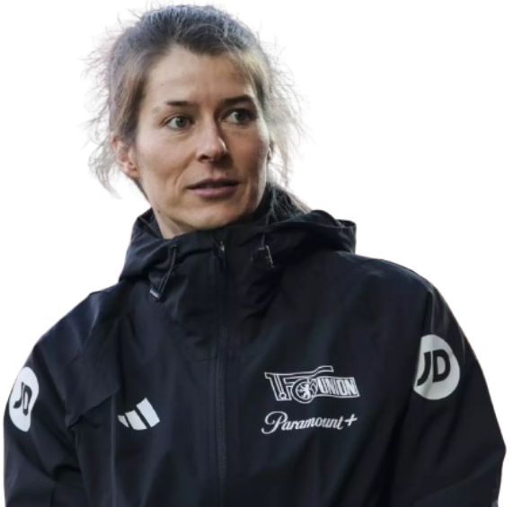
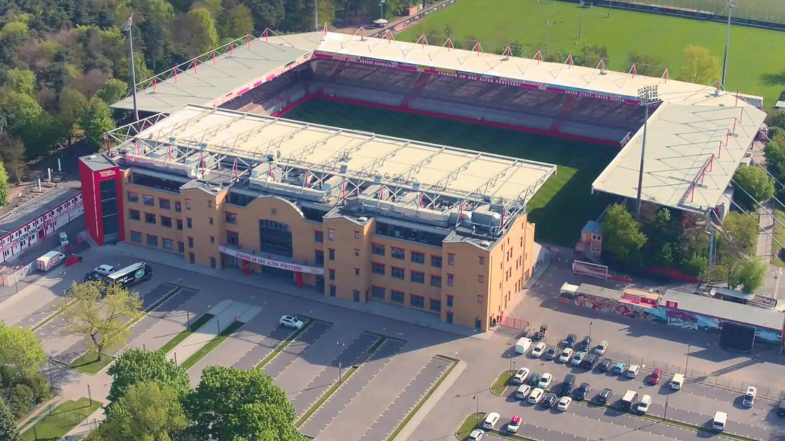

Treinador: Marie-Louise Eta
Marie-Louise Eta é uma treinadora alemã que fez história no futebol mundial ao serviço do Union Berlin. Antiga jogadora profissional e campeã europeia, destacou-se inicialmente como treinadora adjunta na Bundesliga e, em abril de 2026, assumiu o comando interino da equipa principal masculina.

Estádio: An der Alten Försterei
O estádio An der Alten Försterei é o estádio oficial do Union Berlin. O recinto localizado em Berlim destaca-se mundialmente por ter sido reconstruído pelo trabalho voluntário dos próprios adeptos e por ter bancadas maioritariamente destinadas a público de pé

Estilo de Jogo:
O estilo de jogo que Marie-Louise Eta implementou no Union Berlin baseou-se num modelo de futebol vertical, focado no ataque agressivo pelos flancos e numa rápida transição ofensiva.
"Und niemals vergessen: Eisern Union!"